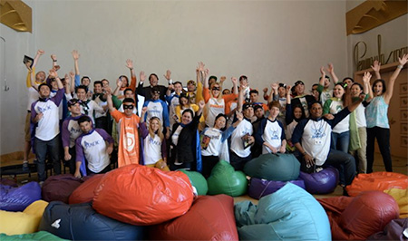
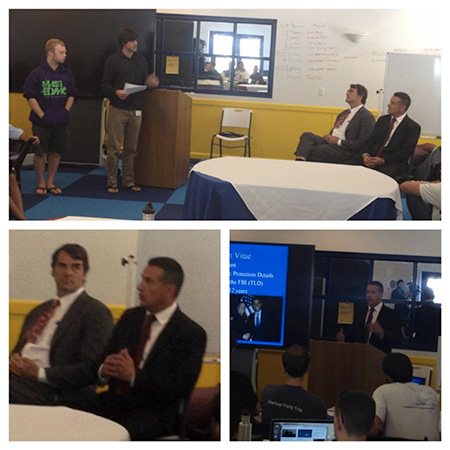
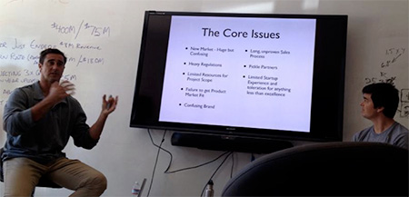
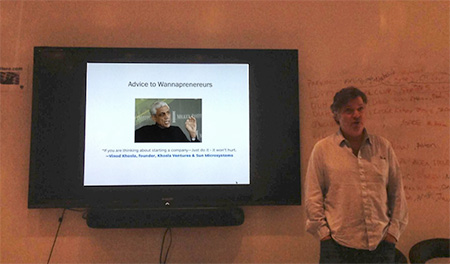

Stanford University student Grace Wang is learning how to change the world as an entrepreneur and innovator at Silicon Valley school Draper University of Heroes. Here, Grace details her experiences as part of the inaugural class from April 17 to June 7, 2013.
|
Graduation Day and Final Thoughts June 7, 2013
 I entered Draper University very naïve with respect to entrepreneurship. I am now a graduate of Draper University, and a hero. Draper University, on graduation day, provided me with a cape, with my hero name inscribed on the back side. My hero name is “World Changer,” and I truly view my identity in this way. I come from China, and I now live in America. I live the American dream. I have come from the other side of the planet into this land of opportunity, change and optimism. I have a very unique perspective because I understand the needs, sufferings, hopes and desires of peoples from the developing world, aspiring to achieve the tremendous accomplishments of the people in the United States. I want China to have democracy. I want monopolies to break down so that people will have freedom and enjoy the opportunities that I have had in my life, in my pursuit of education and in my pursuit of happiness. I feel that my new business, Galaxeeds, will be a powerful force in helping people worldwide to have this type of freedom and access to education that I enjoyed. Draper University educates heroes. During her University prepares the next generation of entrepreneurs. Tim Draper is my hero, and for the rest of my life I will be grateful for the education and opportunities that he opened my eyes to. Before, I was blind. Now I see the light of hope and opportunity, and also feel empowered, as a woman, to use my talents and skill to their full ability to change the world for the better. I am a Chinese woman. Many may underestimate me. Many may see me as quiet, docile, domestic and powerless. They misjudge me. Inside, I have super hero powers. My heart and my courage and my love of life give me the strength to make it impact for the better in society. During Draper University, one of our assignments was to cold call people from around the country to assist with a project. I chose to call deans of engineering at elite colleges throughout the United States and to invite these technology thought leaders to participate in the entrepreneurial ecosystem created by Tim Draper at Draper University and the Collective, a co-working space located across the street from Draper University. These thought leaders included deans from Princeton, Harvard, MIT, Berkeley, CalTech, Duke, etc. Many expressed support and enthusiasm for our entrepreneurial endeavor. These deans also recognize that education is changing. Dissemination and creation of knowledge will no longer be limited by geographical constraints. The East Coast suffers from lack of investors compared to the abundance of investor availability located in Silicon Valley. Entrepreneurs from the East Coast could now travel to the Collective, based in San Mateo, California, and have access to investors and the entrepreneurial spirit that we are so fortunate to have here. The heroes of Draper University help each other to succeed. Tim Draper invited the members of our class, in the initial assignment when we first arrived at the front door, to write down the 101 things that we want to do before we die. I want to change the world. I want to revolutionize education and bring knowledge and opportunity to the billions that need it. Tim Draper is also revolutionizing our lives so that we can be change agents, equipped with the knowledge, skills and self-confidence that we can do it. Tim Draper is creating an entire ecosystem of entrepreneurs and support resources to enable them to achieve their dreams. Tim is founding, not only Draper University, but also the Collective, the co-working space for nascent young startups just getting off the ground. It is also building out common areas such as the café on the first floor of Draper University as another way to support and cultivate innovation and synergy among entrepreneurs and this new ecosystem in San Mateo. Numerous other resources and support systems are envisioned by Tim in this new entrepreneurial endeavor. These include laboratory space, 3-D printing facilities, legal and accounting support advisors, office space and direct linkages with investors in the same co-working space as entrepreneurs. Pitch Day June 6, 2013
Pitch day of my new business, Galaxeeds (www.galaxeeds.com), represented the culmination of all of our efforts at Draper University. I felt nervous and excited for this event. 12 investors sat at a review panel to hear my pitch and the pitches of my fellow classmates. This investor panel consisted of early stage venture capitalists, angel investors, late stage venture capitalists and members of the Silicon Valley entrepreneurial ecosystem. For me, I really tried to give pitch day 100% of my energy, time and capabilities. I learned a technique for presenting from Harvard visiting scholars to my summer camp in China earlier in my education. This technique involves identifying and emotional and dramatic song that represents the core concepts in the presentations that I intend to undertake. For my business, I am building a revolutionary online education website and mobile application. I believe that the outcome of my product and business will transform how education is dispensed worldwide. My business will help bring people out of poverty in developing worlds, where people feel trapped in a cycle of illiteracy, lack of education and lack of economic and career opportunities. Furthermore, my business will help to transform education in the developed world, such as the United States and European countries. This will be achieved by linking tighter the curriculum and course content provided through my educational service with the needs of companies and corporations, so that the people receiving the education will have a closer fit of skills and knowledge with the needs of companies that will employ them. The mechanisms that my business will utilize to distribute this education worldwide will primarily rely on the Internet. One of the consequences of my revolutionary online education service will be the transformation of labor market dynamics in the supply of talented and skilled workers into the active labor force. Imagine a young boy growing up in the slums of Detroit. Yet, this boy has access to my online education business. He can forgo the waste of time curriculum available at his local public schools and delve into the wonders and excitements of nanotechnology, for example, available within my online education service. While pursuing this course of study, he would be tested repeatedly, over and over on my educational platform. These tests would demonstrate his mastery over the fields of nanotechnologies. Because of his internalized education and the evidence of his newly acquired skills through these online tests, he would be able to find a job at an advanced nanotechnology firm located in Silicon Valley. Suppose this firm in Silicon Valley, specializing in nanotechnology, is called: Nano Fluids. Nano Fluids had been involved in the design of this curriculum from the very start. Executives at nano fluids have also been the graders, curriculum designers, curriculum providers, and finally the employers to hire this young talented “whiz kid” of nanotechnology, born from the slums of Detroit. You can see by considering this vignette that my online educational business will truly revolutionize life for all parties, enabling companies to source talent globally from the best of the best, equipped these talented whiz kids with the knowledge and skills needed for them to succeed in their advanced technology jobs, and provide people living in poverty that would typically have no possible access to advanced education and teachers with a “life saver rope” to lift them out of their circumstances into the world of opportunity and abundance. Furthermore, education today is broken. We are stuck in an educational system designed in the 14th century. Previously, we were limited by the number of school buildings, teachers, and printed textbooks, in our capability to educate the public and distribute knowledge and skills. These limitations created a culture of scarcity. With the advent of the Internet and digital information distribution, we no longer have these limitations. My business, Galaxeeds, is revolutionizing education and bringing our society into the 21st century, into a world of educational abundance and access to advanced knowledge of the 7 billion people that desperately need these resources. I felt that the tremendous magnitude of impact of my business necessitated a representation for these 12 pitch judges reviewing the glory of my business. Therefore, I performed an artistic dance and song for these venture capitalists. I played the song on the loudspeaker, Heart of Courage, and you can see the lyrics below. Truly, we fight for freedom in our battle to distribute education globally and help bring people living in poverty into advanced technological society. Lyrics to Heart Of Courage: “The promise, Redemption This time we fight for freedom The dreamer Awaking, Shattered by love The courage Together We lean against destruction Salvation, remission Wait, my new world We take it, We save it, Our hearts unite each other The one who dies with you Follow your path soldier, We face it, we save it Until our last breath fading Wherever, don't matter Burning love for Gaia!” Speakers: Scott and David from the DFJ frontier, Pitch Feedback June 5, 2013 Our speakers today focused on giving us feedback on doing pitches. Our speakers, David and Scott, were actual venture capitalists based in Los Angeles that worked in affiliation with Tim Draper in the DFG network. David had gone to Stanford University as an undergraduate. And Scott went to Princeton as an undergraduate and Wharton for business school. These speakers gave us insights into exactly what investors were looking for when they make decisions about investments. I very much loved how talking to these actual investors cut out the “guessing game” about what investors are thinking and allowed us to go directly to the heart of the matter. I feel like I’m constantly thinking, “will investors like this? What would the investors want to see? Am I ready yet to talk to investors?” All of these questions got cleared up when talking to actual investors. This resonated so much with me because some of the earlier entrepreneurs that spoke to us at Draper University talked about how when they began their investment pitches they didn’t really know what they were doing. Most of the investors would just say no. The odds burners would need to ask why. In these answers to the why question, the entrepreneurs found insights about how to better present their business to the next round of investors. Again, we see a learning curve. Just like when you’re learning to play tennis, you’re not so good with the racket. It takes a lot of hits to get comfortable with the racket and be able to return the tennis ball over the net appropriately. Similarly, in the early days of doing your fundraising pitches, you won’t be so good. Just accept that. You’re still in your learning phase. Keep at it. And eventually, you’ll get good. Furthermore, it helps a lot to have a team with you when you face those initial discouraging nose. Because your team believes in you and you will continue on and persist and eventually get good at doing fundraising. David and Scott told us that we need to answer 3 fundamental questions as fast as possible when speaking to venture capitalists. Don’t get mired down in some kind of story. Let me just list these 3 critical questions below and I will further illustrate what they mean later. What do you do? Why is it interesting? Why will you win? Answer the above questions as soon as you can. Do it right away. Don’t cause the investor to be guessing. If the investor fumbles around mentally for too long trying to figure out what you’re doing, he will just dismiss you. You need to be straight to the point and say exactly what you doing as soon as you can. Fundamentally, “don’t waste my time” is what the investors thinking. And the investor doesn’t want your time to be wasted either. Perhaps you are pitching an idea that is completely outside of the investors’ domain. If you say what you do quickly, he can determine if he would be interested in the same industry that you’re working in. If he’s not interested in that particular industry, he can tell you so and you can leave. There’s no point in pitching to this investor anyway because he simply does not invest in this domain. No investor will invest in an area that they do not understand. You don’t want to frustrate an investor by making him sit there in the chair not understanding what you’re doing. Well perhaps this just applies to intelligent venture capitalist investors. But, let’s just assume for the moment that all venture capitalists are intelligent. You need to communicate what you do quickly. Basically, investors are searching and searching looking for great ideas that will make them a lot of money. That’s what’s interesting to investors. You need to explain why your business will make the investor a lot of money. They’re looking for a large market size. And they are looking for evidence that you and your team will be able to gain share of this larger market quickly. For example venture capitalists frequently want to see a market size that is $1 billion or more where your company can gain 5% of the market within 5 years. That would be interesting to an investor. Finally, the investor wants to understand why you will win period what is your competitive advantage? Why has it that your company will be successful, while others may not be? Perhaps your competitive advantage is your location, or perhaps your skills and X expertise, or perhaps some kind of partnership that will give you a distribution channel to allow you to get users and customers faster than your competition. Figure out what your competitive bandages and then clearly state why you will win. Speaker: Tim Draper June 4, 2013 Tim spoke to us today with closing remarks for the Draper University program. I honestly felt so touched by his words and so proud to be a part of this organization. The advice he gave us an very kind words of encouragement made me feel so inspired and ready to take on new challenges to improve and change the world. I would like to write about some of the questions that he posed for our lives and some of the key insights on our experiences here at Draper University. Tim asked us to consider very important questions in our lives. What do you want to accomplish? What do you want to achieve in your life? The Draper University session began with Tim asking us to identify 101 things we want to do in life before we die. I had never really thought about planning my life in this way. In this sense, even very carefully about your life ending and then look backwards. It’s not “what is the meaning in life?” As many people think about life planning in this way. Instead, you very concretely visualize your life ending and then think about what you had hoped to accomplish before it does meet this very sad end. I don’t like to think about my life ending. However, I do like to think about achievements. So, let’s focus our attention there. Furthermore, Tim asked us to identify how Draper University can help us achieve these goals in our lives. “How can DU help you get there?” And finally, Tim posed the question: “what’s your next step?” That is also a question I’m not entirely sure how to answer for my own life honestly. I envision myself changing the world certainly. But how exactly will I do that? I envision myself as a global individual. I am from a country on the other side of the planet, China. And, here I am in America. Tim gave us the option of continuing to live in Draper University. I feel really thankful for Tim looking out for our best interests like that. Furthermore, Tim encouraged us to brainstorm on how international students would be able to stay and live in the United States and even work here. We brainstormed about creating a new organization that DU students could join so that they would have working privileges here in the US. Tim is really looking out for our best interests. Tim told us, “You’ve become a hero!” I feel so happy that Tim believes in us. That really gives me a sense of confidence that I can do it. I know that I will look back when I faced challenges in life at my days here at Draper University and feel gratitude and a sense of strength as well as responsibility to make my life meaningful and have an impact in helping others. Another interesting aspect of Tim’s talk today was about the NBC interview of him. Tim felt that this interview did not really accurately portray the University. In the introduction of the interview, some words were used by the reporters that might convey negative connotations. Yet, such negative connotations were really not called for. We felt that NBC took this point of view as a counterpoint to the recent ABC interview that portrayed Draper University and a very positive, creative, innovative and super fun light. Seeing this situation, I know that I need to be careful when dealing with the media. Another area that we discussed included future plans for Draper University. The university plans to grow to more students each quarter, from 40 students now to 50 students within a few sessions. Tim thinks that the online version of Draper University will be a big area for growth. I’m excited to see how the virtual world can be leveraged to have a broader impact for Draper University on the rest of the world, creating heroes everywhere that will have the courage to leverage the power of entrepreneurship and technology to improve society and lives. Speaker: Dom Sagolla June 3, 2013 Our speaker today, Dom Sagolla, was one of the original creators of Twitter. He was working at Odeo in the early days with Evan Williams, Biz Stone and Jack Dorsey. This company was based in San Francisco and was about to die. Their product idea for Odeo was focused on building a iPod podcast type software service. Apple at this time just launched their audio podcasting service, and at this point it looked like their product was hopeless in facing this competition. Evan Williams was about to give back the money to his initial investors, when the investors said, “well why not period just go ahead and spend all that money anyways. We gave it to you to see what you could do period go ahead and see if you can pivot to a new idea and to do something else that’s cool.” So, instead of closing up the company, the founders of Odeo decided to hold a series of active funds where the developers would experiment with different new ideas to see if they could build a product that would be useful period these early employees had a series of brainstorms about different product ideas. They would then go ahead and try to build the products and see if they can get traction. Twitter was one of these concepts. Twitter began as a sketch on a piece of paper by Jack Dorsey. Dom showed us the image of this initial sketch. It’s beautifully simple and it formed the basis of twitter. Within 2 weeks, the Odeo guys had the initial prototype of Twitter built. It was a very simple webpage her comments could be inputted and then SMS notifications would be sent out to those people subscribed to the data feed. The key concept was linking the web to SMS. And this linkage would enable people and groups to stay in contact with each other, in real-time. Jack Dorsey described this as a metaphor. A metaphor of the city almost as if it’s the human brain. With little bits of texts balancing between nodes as if these bits of text are electric signals balancing between neurons in the brain. One of the heights of Don’s pride was when Pres. Obama took questions from the American people through twitter. A town Hall was built through twitter where Pres. Obama would take questions from people from Ohio for example. When citizens the see that their leaders are using tools such as Twitter they become more active in participating on this forum. In this way, twitter assisted in promoting Democracy in America by giving everyday citizens an opportunity to communicate directly with their leaders, adding to transparency and collaborative decision-making in the country. Don recently wrote a book describing the early days of twitter. 140 characters. In the story, there are numerous lessons for how to create a successful startup. FIrst and foremost, Don and the twitter team were based in San Francisco. Dom feels that San Francisco is a particularly conducive environment for startups and technology innovation. The key resources are available to help nurture and support a young startup. Furthermore, it is necessary to start small while dreaming big. You’ve got to start somewhere. Without this small start, your big plans might never get started and will fall flat. Build something. Get going get some users. Get some traction. Test out your product and get some revenue. It’s this initial survival stage that is so critical for a start up. Only once the startup has achieved some level of revenue and sustainability can it even hope to have the impact and possibility to achieve the big dream. Speaker: Tim Draper May 31, 2013 Tim spoke to us today about what elements should be included in a business plan. I will outline the key elements below and then describe them in more detail. Business plans should include the following elements:
More detailed considerations: Note that the 1st sentence should state exactly what the business does. Get straight to the point. The investor wants to know as fast as possible what your business does and understand it, so that he can decide whether or not to move forward in taking a closer look. Be brief and describe your business in a way that you’re an investor will understand as quickly as possible. Regarding market size, hopefully your market is a $1 billion or more market. Also, hopefully you can reach 5% of your market within 5 years. That’s the type of market that venture capitalists would like to see in order to get them interested in investing. Tim recommends that startups bootstrap until they find a proven business model. However, once a proven business models found, take as much money as you can from venture capitalists and Scale up the business to as large as possible. A corollary idea to this is that a startup would be wise to choose an idea in the 1st place that can be bootstrapped. This allows the entrepreneur to maintain control of his or her company and not have to have the risk of an investor taking over control and possibly letting go of the founding entrepreneur. Tim recommends that startups keep their team small, to just 3 to 5 people initially. Stay in this small team until you discover a repeatable and scalable business model. Just a single person working alone can be tough. So, recruit a team in order to give your business momentum and energy to push forward through this initial experimentation phase. Vision mission and problem statement sections can be presented in any order. When considering how you will make money b you need to think about how you will reach the market. As a startup, you have limited time and money and resources. You need to hit the market fast with the product that you can sell so that you can discover customer validated product market fit. It’s likely that you will achieve product markets it right away and that you will need to have it or iterate to different product versions. Without a rapid go to market plan, you could potentially waste away months and months and many millions of dollars in doing development without knowing whether or not the customers actually want the product that you’re developing. So the solution to that is to build a product fast and cheap and find out as soon as possible whether or not customers are actually interested in purchasing your product zso suppose you found a product that is actually in attracting customers. How do you price your product to put them in and then to keep them through an ongoing revenue stream? Many businesses recently have been choosing a premium business model. They give away the product for free initially to end-users. However once users are hooked in, perhaps they will be up sold to premium versions of the product. So the free giveaway of the product in the limited feature set serves as a marketing hook, and these free users serve as references for other users to come join in on the service. A really good example of that is Skype, which Tim Draper funded. Skype is provided for free as a free telephone service through the Internet. However users can upgrade to a paid version in order to call telephones. Skype has tens of millions of users and millions of dollars in revenue through this premium business model. Speaker: Martin Mayo, Manatt May 29, 2013 The topic for today centered on mergers and acquisitions. This topic is very important for startups because an acquisition is very frequently the “exit” point for new venture. The exit point is where the initial investors, founders and shareholder employees get a “return on investment”, or payout for their work on the company. A famous example of an acquisition is the Instagram sale a few months ago, where Facebook bought Instagram for $1 billion. I am super impressed by the Instagram sale because the company was started just 2 years before it was sold for this very large amount. All of the founders of the company got very rich. The acquisition was also success for Facebook because it allowed Facebook to get a strong foothold in the mobile photo sharing market. The traction achieved by Instagram has continued and now the service has hundreds of millions of users. So how exactly does a acquisition work? Let’s talk about the M&A process: 1. Interest from acquirers. 2. Nondisclosure agreement 3. Letter of intent/term sheet. This is the point we probably want to get a lawyer involved. We want to structure the deal so that it is in our favor. Without a lawyer involved, it’s likely that the acquirer will take advantage of us. 4. Negotiated and signed a definitive agreement of acquisition contract. 5. Obtain required approvals. These approvals might be from the following parties: shareholders, regulatory agencies, third parties. 6. Close the transaction. Finish the deal. Make sure that all the closing conditions are met. Ensure that the money has been transferred from the acquirer to be acquired. Who are the players involved in the acquisition?
The seller seeks to achieve financially gain. The seller seeks to achieve liquidity for his or her investment into the building of the company. Seller may be responding to technological changes or lack of market presence as a motivator for this acquisition. You may also be responding to pressure from creditors or the need for additional capital requirements.
Speaker: Jim Steele, Salesforce.com
Speakers: Leanne ten Brinke, Post doc, UC Berkeley; Dana Carney, Assistant Prof., UC Berkeley May 30, 2013 In this session, we explored the nature of lies. The speakers began by posing the question: “who would lie to you?” They then showed two videos of an old woman and then of a young man. Both people spoke into the video camera and told a story and described a situation. The speakers asked the audience to identify which people were lying. In fact, both people were lying. The old woman had killed her husband. And the young man had killed his wife. Both people were making video testimonials that were complete fabrications, attempting to conceal their crimes. The speakers invited us to attempt to identify “giveaway” indications in the behavior of these liars. The speakers asked us to consider the following question: How can you tell if someone is lying to you? Many people believe that liars avoid eye contact. Liars appear nervous and fidgety. However, the speakers tell us that these are not clear indications of liars versus truth tellers. Liars don’t necessarily look to the left to come up with some kind of creative lying story. There is no Pinocchio’s nose to indicate whether or not a person is lying. However, there are other more subtle “micro-expressions” that can be relying on more effectively to determine whether or not a person is lying. The analysis of whether or not a person is lying or not is important in entrepreneurship because as entrepreneurs we need to make careful decisions about business based on the information that people tell us. Being able to detect lies is an important skill for an executive in navigating the business landscape and avoiding when minds. For example, when a hedge fund is determining whether or not to hire a new staff member, the speakers advise these hedge funds managers to videotape the interviews. After the interviews, the videos can be played and replayed in slow motion to analyze the behavior of the candidates. If, the candidate’s exhibit lying indicators, such as micro-expressions that are inconsistent with the emotion that would logically be expressed in a given situation, these micro-expressions are indications of a lie. One example is the Alex Rodriguez case. Rodriguez claimed that he did not use steroids. However, as he’s being interviewed on a national television, when asked rectally whether or not he used steroids he would say “no” and yet not his head yes. It’s as if his body wanted him to tell the truth and yet his mind controlled his words to say a lie. One of the reasons why this body language can be a big indication of a lie is that the emotions are expressed in voluntarily on the face. It takes cognitive control to suppress these emotions and yet they can be flashed for others to see as “micro-expressions.” Thus a key tool that a businessman can use to look for signs of lie is observation of these micro-expressions that are inconsistent in motion in the context of the given story. An important way to determine if someone is lying is by establishing a baseline. When interviewing a person, do some small talk so that you can see how people behave when relaxed and simply exchanging pleasantries. This baseline should be videotaped so that it can be compared to the emotional expressions when a person is facing cognitively taxing lying questions. For example, a person may behave quite differently when he’s facing the question “where were you the day of the murder?” In this session, we watched numerous examples of people lying. Another particularly famous line is Bill Clinton’s claim that he “did not have sexual relations with that woman, Monica Lewinsky.” When Bill Clinton made this line, he pressed his lips, like a lip bite. This expression, of biting or pressing down on one’s lips is a common indicator of a lie about to be expressed. Furthermore, Bill Clinton, when denying these sexual relations attempted to exhibit an expression of anger; however, we see on the videotape of him displaying micro-expressions of fear during points in which he supposedly attempted to express anger at these accusations. In conclusion, as an entrepreneur, when attempting to determine if a person is lying to you, look for micro-expressions of emotion that are inconsistent with the context. These inconsistencies are indications of lies. And, when looking at the cumulative buildup of inconsistencies, we can more effectively determine the likelihood of whether or not a person is lying.
Survival Weekend
Hello heroes, you’ve probably already figured out that Draper University of Heroes is like no other school from what we do in our daily activities. Now I have to tell you that all of the challenges and rewards you get in those daily activities cannot even compare to what you would face at the survival weekend. This is the place where a young boy truly grows into a man, a group of individuals who happened to be on a team become as close as family, and one’s belief on what is possible gets fundamentally changed. This is the most amazing and difficult experience in my life and I am proud that I’ve shared it with people I love. Our team, Team Blizzard, was facing some serious challenges and disagreements before going off to the survival weekend training, so I was a bit worried about how we could handle our lack of coherence when we were out there in the wilderness. It turned out that the wilderness, away from your social networking devices and personal plans, are the best places to make bonds. For privacy reasons I cannot share the details of our experiences there. I need to protect my team members and other DU students, as well as giving you who will attend DU in the future a chance to fully experience survival challenges without head notice of what to expect here. Don’t hesitate. Just go forward to embrace the challenges. You’re come out of it becoming a new person, better, stronger and tougher. From the wilderness, with love. :-) Decision Making in Law Enforcement May 22, 2013
 Today, a police officer, Sergeant Wayne Benitez, came to speak to our class. The topic that he spoke about was thinking and decision-making in law enforcement. Of course, the primary responsibility of the police is to protect its public safety by enforcing laws. However, the policemen often need to make quick decisions in uncertainty and pressure from the situation can make the process challenging. The central topics Sgt. Wayne spoke to us about centered on making careful decisions in such a high stress environment.I’ll describe a bit of background on the speaker. Sgt. Wayne works in the Palo Alto law-enforcement. He spent some time in the SWAT team for 12 years. He also has secret clearance through the FBI. He is an expert in dignitaries/public protection details. He has also some prior work as a detective. Furthermore he works as a police academy instructor, as well as a public safety officer. Sgt. Wayne described the process involved in hiring a police officer. New police officers go through a rigorous process of selection and testing. 1st of all, they must submit a written application and undergo a physical examination. They have a written examination, an oral board, lieutenant’s oral, a background check (where everything is examined and considered fair game). The next steps include a polygraph test to see if the candidate is lying about the background. Next, the candidate must undergo a chief’s interview, where a conditional job offer may be given. Then, the candidate must undergo a psychological exam. Candidates are examined as to whether they have the psychological profile that would match the personality characteristics needed for a police officer. Next, the candidate is given a medical examination. And, finally, a drug test. If the candidate fails the drug test, he will not proceed to become a police officer. However, this candidate is free to start over and undergo this entire process once again at a later time to try to become a police officer. Although the process to select and hire a police officer is rigorous and often effective, sometimes they make mistakes and hiring. These can lead to events that damage the reputation of the police. It is important for chiefs to let go of police officers if they don’t fit down the road. In law enforcement, good decision-making is critical. If a bad decision is made, it can lead to harming or ending a police officer’s career, the officer or the police department itself getting sued, punitive damages, or even costing the police officer himself his life or the lives of the public. Because of the high stakes involved in police work, a careful decision making process has been developed and is shared with incoming new police officers. This process is called the OODA-LOOP. This is an acronym for the following: observe, orient, decision, act. One of the important considerations when making decisions is that police do not want to be accused of brutality. Policemen seek to be viewed as fair and just servants of the public and protectors of the common good. Some of the problems that can occur when a police officers making a decision include the following:
Sgt. Wayne comments about effective decisions in law enforcement connect to entrepreneurship because of the uncertainty and speed necessity when taking on a new startup venture. Entrepreneurs must deal with I great amount of uncertainty and make decisions quickly in order to achieve success and avoid mistakes. When I face entrepreneurial decisions, I will think back to how Sgt. Wayne faces stressful law enforcement decisions and reflect on his careful decision-making process OODA: Observe, Orient, Decide, Act. Understanding this i decision making process will be a template in my thinking as I take on my new start up. Lessons Learned from a Failed Entrepreneurial Endeavor May 21, 2013
 Adam Draper and Thomas Foley spoke to our Draper University class today about the startup they had been working on over the last 3 years. At this point, they decided to move on to new endeavors, because their business wasn’t really going so well. One of the key points that they made is that their burn rate was too high, given that they had no income and profit into their business. In fact, the two founders raised over $7 million, and their business was consuming hundreds of thousands of dollars each month. This type of burn rate might have been okay if the business had been achieving milestones, and therefore, been able to raise additional venture capital. However, their company growth metrics were, unfortunately, insufficient to give venture capitalists confidence in their ability to grow a profitable business.One of my favorite aspects of this talk was the fact that the speakers articulated very specific lessons that they learned from their failed entrepreneurial endeavor. For example, they included the following lessons in the presentation:
Tim Draper was present at this talk. Tim had served as advisor to his son, Adam, and his partner, Thomas, as they attempted to grow this venture. Tim had assisted Adam in the fundraising process and developing the concept for this business and the managing of employees. During this talk, Tim shared with us his approach on letting employees go. Basically, the management needs to make a decision to let someone go and then firmly express this decision to this employee. In the past, he has seen problems in the process of firing an employee, and it has often been in a “wavering” in the decision to let someone go. This in between state is painful for the employee on the way out and is also damaging to the existing team, creating a sense of fear and uneasiness among the people that will still continue and stay in the team. The employee that will be fired must be removed quickly and firmly in order to avoid a corrosive effect on the remaining team members. Therefore, when Tim decides to let a person go, he walks into the boardrooms and the first thing he says is, “I’m sorry. John. We’ve got to let you go.” He gets straight to the point. There’s no buildup or lead up or any kind of excuse is a rationale. That’s just the decision. We’re going to let you go. After that’s been said, there can be further discussion or perhaps emotional soothing or perhaps pointing the employee in a new direction that might be helpful. But, nevertheless, the decision has been made and it is expressed right away. I very much admire Adam and Thomas for their courage to share their story in this failed startup. They spoke to our Draper University class with intention to share their lessons with us so that we would not make the same mistakes that they made. I very much took to heart the necessity to keep costs low in the early stages of the startup so that we would not run out of money before discovering a product that achieved product–market fit. Bootstrapping May 20, 2013
 Andrew Grauer came to visit us today. He started Course Hero, a website to help college students study better for their assignments and tests. He started this website while attending school to serve his own needs. At the time, he did not know how to program, so he walked around the local engineering classrooms and asked students for help. He found some willing students and they designed the initial prototype. Andrew didn’t have much cash and so he persuaded students to build the product for just equity, no cash, and he gave out just 2% equity to the initial engineer. Then, once they had something already going, it was much easier to recruit additional engineers and to give a much lower equity stake, just 0.2% in most cases for the additional follow-on engineers.Andrew told us that the cost of hardware is going down. The cost of software development is going down. The college kid with just $10,000 and help from his brothers can get a business going that will be eventually worth millions of dollars. For two years it was just Andrew, alone, working as the sole founder of his business, with the assistance of engineers around him at his university. But then, eventually he decided to move out to Silicon Valley and to raise angel capital. He really struggled in this process of raising capital. He went through emotional cycles feeling like the business was worth just $0 but then the next day he would feel the business was worth $20 million. It wasn’t until investment capital deals closed that he became confident that he really had something. However, by this time he was making $100,000 a year in revenue through the sale of premium service subscriptions for his product. He would drive in traffic through SEO search engine marketing techniques. You would figure out stuff as he went along. He really didn’t have any idea what he was doing. He would just get an idea of something that would be useful and go for it period. He felt that his use in starting the company was both an advantage and disadvantage. In his youth, he didn’t know what the right paths would be to start his company. He didn’t have a strong business network. He didn’t have the knowledge and skills that he knew would be needed to be successful playing the game of entrepreneurship. As a youth, had less access to capital. Yet, on the other hand, his youth was also a strategic advantage. For example, he could keep his burn rate because he didn’t need to support a family. He also had a naïveté so that he would take risks and explore and discover opportunities, when some older might not even start the exploring process because their experience would have told them that taking such course of action would be unlikely to succeed. Thus, the exploratory nature of his youth gave him the advantage to find success. One of the key factors in Andrew’s success was his bootstrapping approach. Central to the bootstrapping approach is the necessity to keep costs low. Keep your burn rate low! One of the ways that he kept his burn rate low was by living with his parents. His parents would pay for his housing and his food. Furthermore he would not pay his engineers or employees he would give them the stocks only. Also, he would get users by doing SEO optimization another very low-cost methodology to get users. He would track his users very carefully that would come in for SEO, doing A|B testing to explore the website designs to push users down the funnel into a paying status. Andrew started with just $10,000 in savings. And he used just $10,000 in this first year of operation. He watched at one school. He found that it worked well at his school. He decided to expand beyond the school, while also maintaining a low burn rate. He lived with his parents. He didn’t plate employees. He begged engineers to work for him for just stock options. Once the business was successful at 4 schools, he sought to raise venture capital. The investors felt that his product was interesting, but he did not display enough traction. He initially failed to raise capital. This left him feeling discouraged. Yet, the business was and now generating enough revenue to support his needs or it. Furthermore the initial $100,000 that his family put into the business kept him surviving an operation for 3 years. Every dime he spent meant a lot to him. He used his persistence animated emotional strength to continue on despite negativity from investors finally, in 2008 and are succeeded in raising half $1 million from investors. At the time he talked to 20 investors, and he finally close the deal. For example, he got SV Angel interested. And this led to a lot of introductions. The mentors he gained from these fundraising experiences led to further success. He is now so thankful that he made it through those tough early days in bootstrapping mode to the point where he is now, comfortably growing the business and surviving nicely off his salary. Ties that Bind May 17, 2013 We had a special bonding event for DU students across team to get to know each other. The request is you have to tie your upper-arm or thigh to another person who you have not talked to much and don’t know very well for two hours during lunch break. And you have to tie to each other facing opposite directions. That way, you will get to know the habits of that person and learn to cooperate with each other to make each other comfortable while meeting each other’s needs. It was a lot of fun. See what the boys were doing when they were tied up! |
|
|